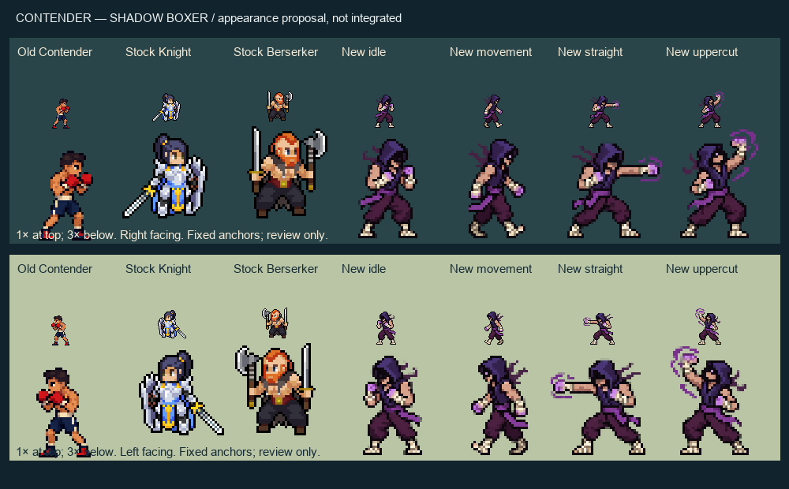
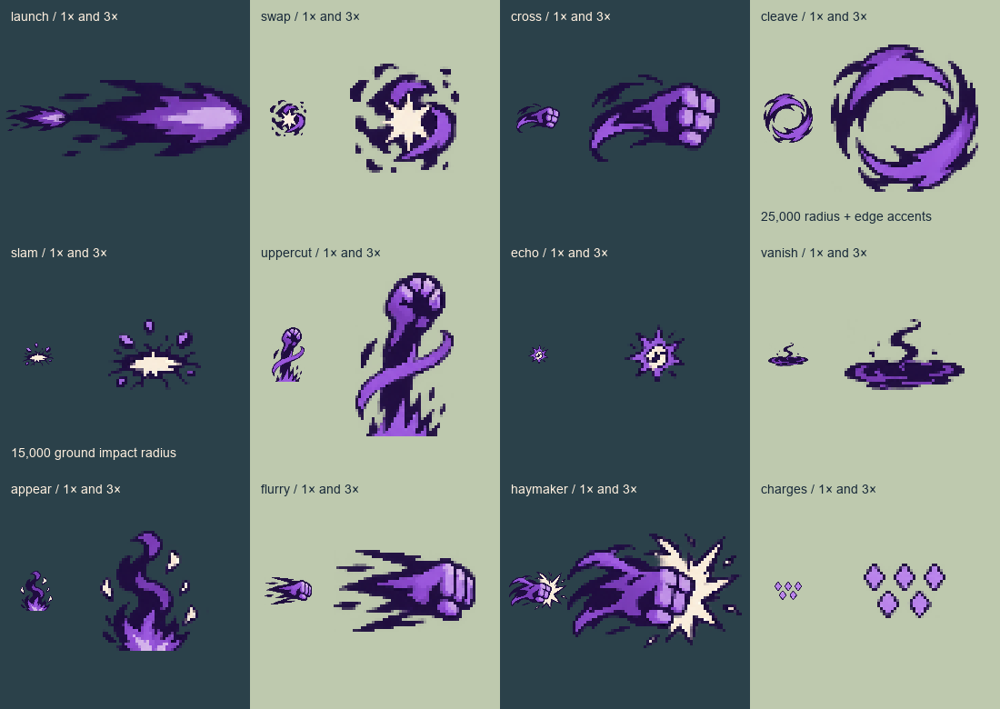

Contender — Shadow Boxer
PR #91 / contender-2.0. Original hooded body, wrapped fists and violet shadow energy. Approved body and effects are integrated into the PR candidate; installation and actual-game acceptance remain separate.
Open playable real-map Lab · Original generated source

Appearance / actual size and 3×
Appearance approved 18 November 2026. Frozen concept comparisons are retained below; the inspector now plays the complete packaged animations. Dark terrain shows right facing, light terrain shows left facing.

On the extracted game map
Shadow skill effects
Shadow effects approved 18 November 2026. Launch/swap, punches, Cyclone, slam/uppercut, echoes, vanish/reappearance, Flurry, haymaker and charge marks are shown at 1× and 3×.

Preserved mechanics
PR #91 owns skills, damage, charges, AI, cooldowns, hit geometry and Mod Power. This pass changes presentation. No ring or new isolation mechanic is added. Lab movement, opponents, mitigation and visibility remain labelled simulations.